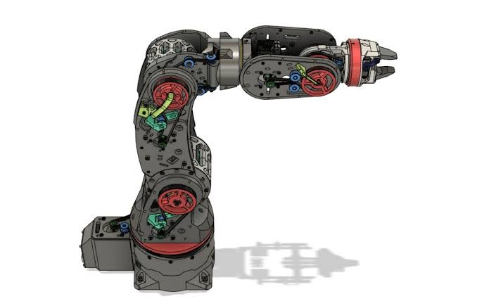
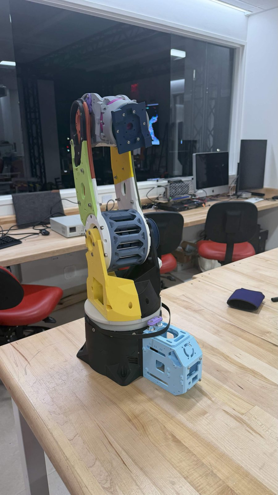

ARCTOS Robotic Arm: Automated Inventory System
Building an open-source, 3D-printed 6-axis robotic arm and turning it into an automated inventory system, modeled on real warehouse, inventory, and palletizing robots. I'm leading the 25-person BU Robotics Club team behind it.
Overview
The project started with a focused goal: build the open-source ARCTOS robotic arm, a 3D-printable 6-axis arm with roughly 600 mm of reach and a 1 kg payload. Once the arm was built and moving, the scope grew significantly. It is now one of the BU Robotics Club's leading projects, aimed at modeling the kinds of problems robots solve in industry: warehouse picking, inventory management, and palletizing.
Phase 1: Building the Arm Complete
We printed and assembled the arm following the ARCTOS design, then wired the stepper motors into a circuit and ran them to confirm every joint could move. The arm is currently built to the stock ARCTOS specification, and our mechanical team is now working on upgrades.


Phase 2: Automated Inventory System In Progress
Where It Starts
The club already runs an inventory system on a Raspberry Pi connected to a label printer and a Notion database, built and thoroughly documented by a former club member. A user photographs an item and enters its details (name, custom item number, quantity, weight, price), and the system prints a label and logs the item. From there, a person applies the sticker and stores the item by hand. We plan to move the system onto a website so members can request parts easily.
Where It's Going
We're automating the storage and retrieval. A user will enter an item's information on a tablet; an ARCTOS arm mounted on a linear rail will pick the item and place it into a shelving storage system we're developing, then retrieve it again on request. Every deposit and retrieval will be logged automatically, keeping the inventory accurate without manual bookkeeping.
- TabletEnter item info
- Inventory SystemRaspberry Pi + Notion log
- Label & ScanQR code + AprilTags
- ARCTOS ArmPicks item on linear rail
- ShelvingStore & retrieve on request
- LoggedEvery deposit & retrieval
System Design
- Control: a ThinkPad laptop will process commands and drive the arm, with magnetic encoders measuring each joint's angle for position feedback.
- Vision: the arm will locate items using computer vision, reading AprilTags and scanning QR codes on the labels.
- End effector: the team is designing a custom tool-changer base that mounts to the arm and serves as the foundation for every gripper we build.
- Mechanical: upgrades to the stock arm, a linear rail, and the shelving storage system.
Leading the Team
The project is run by a 25-person team split into mechanical, electrical, software, computer vision, and end effector subteams. I'm currently leading the full team until we bring on a dedicated project lead. A major focus is building a learning pipeline, so members who join with little experience can grow into real robotics work and keep the project moving as people come and go.
Roadmap
- Build the ARCTOS arm (stock configuration)
- Wire and run the stepper motors
- Raspberry Pi label and inventory system (existing)
- Mechanical upgrades to the arm
- Tool-changer base for the end effector
- Magnetic encoders for joint position
- Computer vision: AprilTags and QR scanning
- Arm control software on the ThinkPad
- Linear rail and shelving storage system
- Tablet interface and website for part requests
- Full pick, store, and retrieve demo with logging
- Finished prototype: March 2027
- Context
- BU Robotics Club
- My Role
- Team lead, 25 members
- Hardware
- ARCTOS arm, stepper motors, Raspberry Pi, ThinkPad
- Status
- In progress · target March 2027